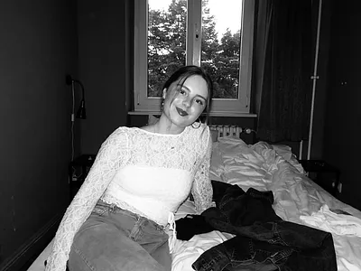

VELKOMMEN TIL MIT PORTFOLIOSITE
Mit navn er Julie Teilmann Brixager, jeg er 21 år gammel, og til dagligt læser jeg Multimediedesign på EK. Design, mode og kreativitet er noget som altid har interesseret mig, og jeg elsker at udforske stilarter, trends og forskellige
udtryksformer.
Jeg synes særligt det er spændende at udfordre og sammensætte de forskellige æstetikker og stilarter for at skabe nye og unikke udtryk. Dette er især noget jeg tager med når jeg arbejder med grafisk design og
webdesign.
Scroll ned og læs mere om de temaer og opgaver jeg har arbejdet med i løbet af mit første semester på Multimediedesign.


Temaer og opgaver
- Tema #02
- Grundlæggende Web
- Tema #03
- Grundlæggende UX/UI
- Tema #04
- Grundlæggende Brugergrænsefladeudvikling
- Tema #05
- Grundlæggende Indhold